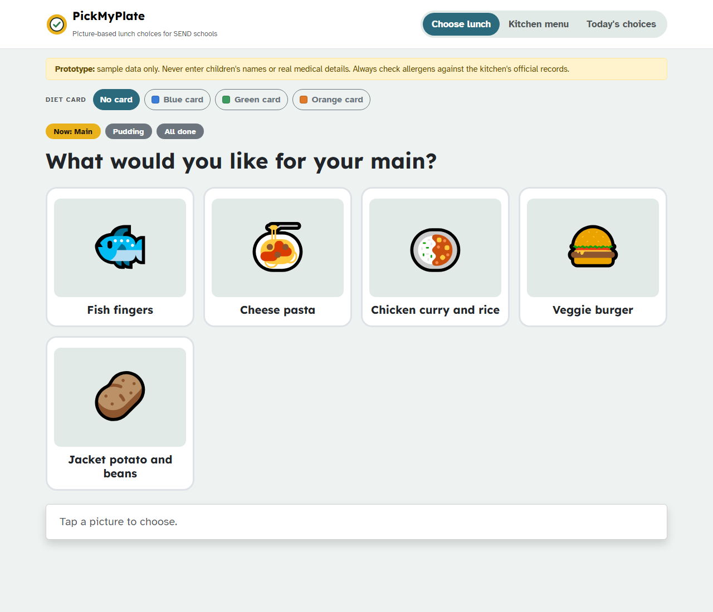
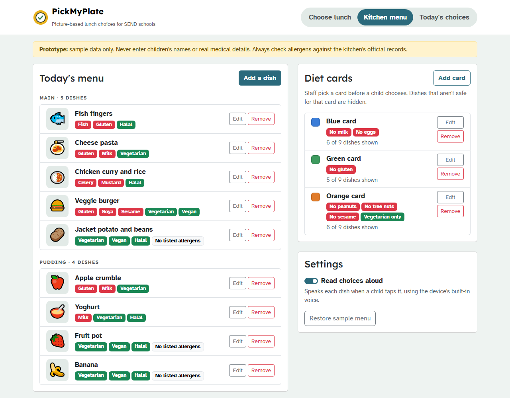
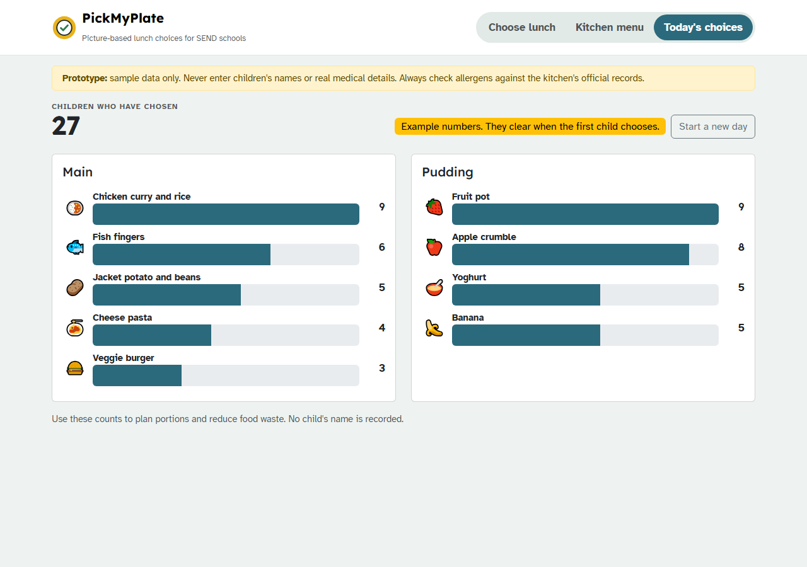

PickMyPlate
Product overview
Every child can choose their own lunch.
A picture-based, read-aloud lunch menu for children in special educational needs (SEND) schools, with allergen-aware diet cards and portion counts for the kitchen.

A picture-based, read-aloud lunch menu for children in special educational needs (SEND) schools, with allergen-aware diet cards and portion counts for the kitchen.

In SEND schools, many children are autistic, non-verbal, or can't yet read. A written lunch menu doesn't work for them, so an adult often chooses for them. That takes away independence and can cause anxiety at mealtimes.
At the same time, school kitchens must manage the UK's 14 allergens and many individual diets safely, often with paper lists.
Written menus are hard to read and understand. Unfamiliar food causes anxiety. Children have little say in what they eat.
Allergen checks rely on memory and paper. It's hard to know how many portions to cook, which leads to food waste.
PickMyPlate turns choosing lunch into something every child can do on their own:
| Feature | What it does |
|---|---|
| Big picture cards | Each dish is shown as a large picture (emoji or a real photo of the school's food). |
| Read aloud | Tapping a dish says its name out loud, so children who can't read can still choose. |
| "Now and Next" steps | One course at a time (Main → Pudding → All done), using a routine SEND schools already know. |
| Confirm step | A clear "I choose…" button, so one accidental tap doesn't count. |
| Diet cards | Colour-coded cards (e.g. No milk No eggs) hide unsafe dishes. Cards use colours, never children's names. |
| 14 UK allergens | Kitchen staff tag each dish with the allergens it contains. |
| Portion counts | Anonymous counts show how many of each dish to prepare, which reduces waste. |
The screen children use, usually on a tablet with an adult beside them.
The child sees large pictures of today's mains. The yellow "Now: Main" badge shows where they are.
Where staff set up each day's menu and the diet cards.

Red labels show allergens. Green labels show Vegetarian, Vegan or Halal.

The total number of children, and how many chose each dish, most popular first.
| When | Who | What they do |
|---|---|---|
| Morning | Kitchen staff | Set today's dishes in Kitchen menu. |
| Before lunch | Class staff and children | Each child chooses in Choose lunch, with their diet card selected first. |
| Before serving | Kitchen staff | Check Today's choices to see how much of each dish to prepare. |
| Next day | Kitchen staff | Press "Start a new day" and update the menu. |
| Part | Technology |
|---|---|
| Structure | HTML5 |
| Design and layout | Bootstrap 5.3 with custom CSS, dark mode, and phone/tablet layouts |
| Behaviour | Plain JavaScript |
| Read aloud | The browser's built-in Web Speech API (British English voice) |
| Fonts | Lexend and Atkinson Hyperlegible, both designed for readability |
| Hosting | No server needed; can be published free with GitHub Pages |
| Stage | Plan |
|---|---|
| Now | Working prototype. Gather feedback from SENCOs, speech and language therapists and kitchen staff. |
| Next | Publish online; make it installable on tablets (PWA); printable picture menus; one menu shared across devices. |
| AI | Recipe → allergen suggestions (always confirmed by staff); simple descriptions of new foods; dish pictures. |
| Later | Texture levels (IDDSI) for children with swallowing difficulties; more languages; app store releases; care homes and learning disability services. |